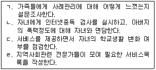

사회복지사-1급(2교시)(구) (2012-02-05 기출문제)
1과목: 사회복지 실천론
1. 실천개입의 목표로 바람직하게 기술된 것은?
- 늦잠을 자지 않는다.
- 바람직한 대인관계를 형성한다.
- 집단 프로그램을 제공한다.
- 매일 동화책을 1시간씩 읽는다.
- 경제적 안정을 획득한다.
(정답률: 64%)

2. 청소년을 위한 10주간의 진로집단 활동 전ㆍ후에 진로효능감 검사를 하여 결과를 비교하였다면 이 평가방법은?
- 형성평가
- 성과평가
- 과정평가
- 만족도평가
- 실무자평가
(정답률: 60%)
3. 사례관리 과정을 순서대로 바르게 나열한 것은?

- ㄴ → ㄷ → ㄹ → ㄱ
- ㄹ → ㄴ → ㄱ → ㄷ
- ㄴ → ㄹ → ㄷ → ㄱ
- ㄹ → ㄱ → ㄴ → ㄷ
- ㄴ → ㄹ → ㄱ → ㄷ
(정답률: 64%)
4. 사회복지실천 이념에 관한 설명으로 옳지 않은 것은?
- 사회진화론에 근거한 사회복지실천은 인보관 활동에서 찾아볼 수 있다.
- 다양화 경향은 다양한 계층과 문제를 인정하는 계기가 되었다.
- 우애방문자들은 취약계층에게 인도주의적 서비스를 제공하고자 하였다.
- 시민의식의 확산으로 주는 자 중심에서 받는 자 중심의 서비스로 전환되었다.
- 개인주의 사상은 엄격한 자격요건 하에서 최소한의 서비스만 제공하는 경향을 낳기도 하였다.
(정답률: 58%)
5. 할머니 사망 후 큰아버지 집으로 갑자기 이사 가게 된 빈곤 조손가정 아동의 사례관리자가 수행할 역할로 적절하지 않은 것은?
- 이사에 대해 걱정되는 것이 있는지 물어본다.
- 이사에 대한 마음의 준비를 하도록 돕는다.
- 이사 가는 지역의 사례관리 기관을 안내한다.
- 위급상황 발생 시 연락하도록 기관 연락처를 준다.
- 갑작스런 이사이므로 이사와 함께 사례관리를 종결한다.
(정답률: 68%)